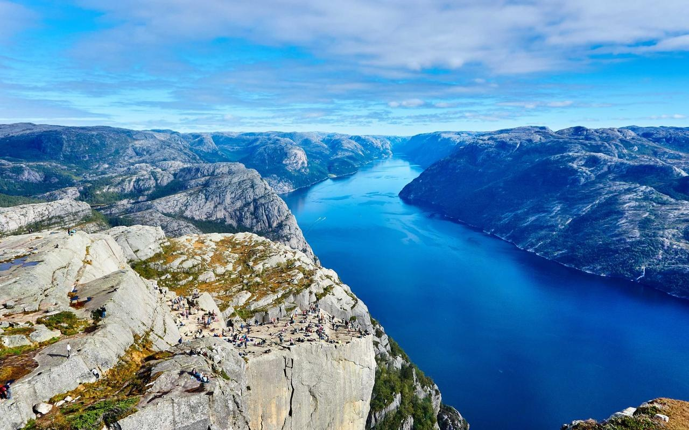
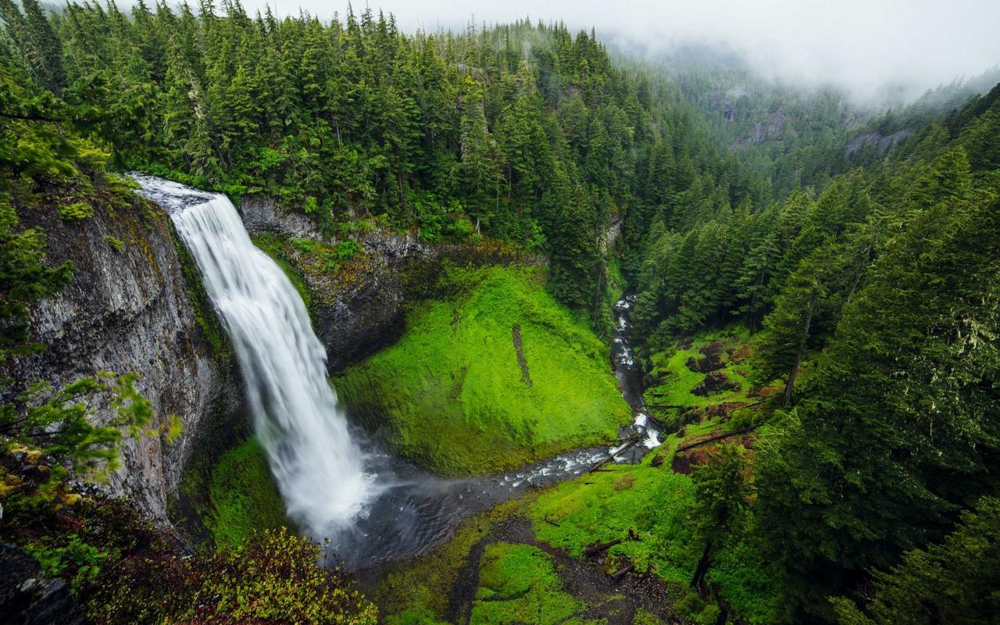
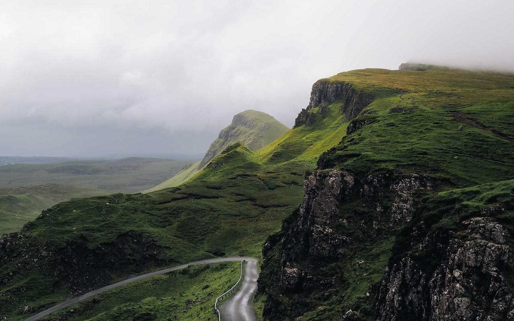

<main class="lab-page" id="main">
  <section class="lab-hero">
    <div class="wrap">
      <div class="lab-head">
        <div>
          <div class="pf-pill"><span>INTERACTIVE WEBGL 2 LAB</span><i></i><span>REAL-TIME COLOR SCIENCE &amp; GAME ASSETS</span></div>
          <h1>Interactive Algorithm &amp; Game-Asset Lab</h1>
          <p class="lede">Benchmark PixelForge’s perceptual shaders, OKLab Bayesian Gaussian Mixture clustering, mirror-deduplicated tilemaps, and procedural color-ramp synthesis live in your browser on real photography.</p>
        </div>
        <div class="lab-head-cta">
          <a class="btn primary" id="lab-open-studio" href="../editor/">Open Full Workstation →</a>
        </div>
      </div>

      <div class="lab-source-bar" role="region" aria-label="Test image selector">
        <span class="lab-source-lbl">Test Source:</span>
        <div class="lab-photos" id="lab-photos">
          <button class="photo-pill" type="button" data-photo="../assets/photos/mountain-fjord.jpg" data-sample="mountain-fjord" aria-pressed="true">
            <span>Mountain Fjord</span>
          </button>
          <button class="photo-pill" type="button" data-photo="../assets/photos/lake-reflection.jpg" data-sample="lake-reflection" aria-pressed="false">
            <span>Mirror Lake</span>
          </button>
          <button class="photo-pill" type="button" data-photo="../assets/photos/forest-waterfall.jpg" data-sample="forest-waterfall" aria-pressed="false">
            <span>Forest Waterfall</span>
          </button>
          <button class="photo-pill" type="button" data-photo="../assets/photos/alpine-valley.jpg" data-sample="alpine-valley" aria-pressed="false">
            <span>Alpine Valley</span>
          </button>
          <label class="photo-pill upload">
            <input type="file" id="lab-upload" accept="image/*" hidden>
            <span>+ Upload Custom Image</span>
          </label>
        </div>
        <span class="lab-gpu-badge" id="lab-gpu-badge">Initializing WebGL 2…</span>
      </div>

      <div class="lab-tabs" role="tablist" aria-label="Interactive Lab Modules">
        <button class="lab-tab" type="button" role="tab" aria-selected="true" data-lab-tab="dither">
          <b>1. Dither &amp; Posterior Arena</b>
          <span>Compare 6 perceptual dithers live</span>
        </button>
        <button class="lab-tab" type="button" role="tab" aria-selected="false" data-lab-tab="palette">
          <b>2. OKLab-BGM Discovery</b>
          <span>EM Gaussian vs Salient vs Median-Cut</span>
        </button>
        <button class="lab-tab" type="button" role="tab" aria-selected="false" data-lab-tab="tileset">
          <b>3. Mirror-Deduplicated Tilesets</b>
          <span>Live X/Y flip compression &amp; .zip export</span>
        </button>
        <button class="lab-tab" type="button" role="tab" aria-selected="false" data-lab-tab="harmony">
          <b>4. OKLab Harmony Designer</b>
          <span>Procedural pixel-art color ramps</span>
        </button>
      </div>
    </div>
  </section>

  <section class="lab-body">
    <div class="wrap">
      <!-- LAB 1: DITHER ARENA -->
      <div class="lab-pane" data-lab-pane="dither">
        <div class="lab-controls">
          <label class="lab-ctrl">
            <span>Pixel Width <output id="d-w-val">148 px</output></span>
            <input type="range" id="d-w" min="64" max="240" step="4" value="148">
          </label>
          <label class="lab-ctrl">
            <span>Dither Strength <output id="d-str-val">44%</output></span>
            <input type="range" id="d-str" min="5" max="100" step="1" value="44">
          </label>
          <label class="lab-ctrl">
            <span>OKLab-BGM Colors <output id="d-pal-val">14</output></span>
            <input type="range" id="d-pal" min="4" max="32" step="1" value="14">
          </label>
        </div>
        <div class="lab-arena-grid" id="dither-grid"></div>
      </div>

      <!-- LAB 2: PALETTE DISCOVERY -->
      <div class="lab-pane" data-lab-pane="palette" hidden>
        <div class="lab-controls">
          <label class="lab-ctrl">
            <span>Target Swatch Count <output id="p-cnt-val">12 colors</output></span>
            <input type="range" id="p-cnt" min="4" max="24" step="1" value="12">
          </label>
          <label class="lab-ctrl">
            <span>SVD Structural Denoise <output id="p-svd-val">25%</output></span>
            <input type="range" id="p-svd" min="0" max="100" step="5" value="25">
          </label>
          <label class="lab-ctrl">
            <span>Pixel Width <output id="p-w-val">156 px</output></span>
            <input type="range" id="p-w" min="72" max="240" step="4" value="156">
          </label>
        </div>
        <div class="lab-pal-grid" id="palette-grid"></div>
      </div>

      <!-- LAB 3: TILESET VISUALIZER -->
      <div class="lab-pane" data-lab-pane="tileset" hidden>
        <div class="lab-controls">
          <label class="lab-ctrl">
            <span>Tile Grid Dimension</span>
            <select id="t-size" class="lab-select">
              <option value="8">8 × 8 px (NES / GBC)</option>
              <option value="16" selected>16 × 16 px (SNES / GBA / Indie)</option>
              <option value="24">24 × 24 px (RPG Tactical)</option>
              <option value="32">32 × 32 px (HD Pixel / Metroidvania)</option>
            </select>
          </label>
          <label class="lab-ctrl">
            <span>Scene Width <output id="t-w-val">192 px</output></span>
            <input type="range" id="t-w" min="96" max="320" step="16" value="192">
          </label>
          <label class="lab-ctrl check">
            <input type="checkbox" id="t-flips" checked>
            <span>Mirror X / Y / XY Flip Deduplication</span>
          </label>
          <button class="btn primary" type="button" id="t-download">Download Tileset + JSON (.zip)</button>
        </div>

        <div class="lab-tile-stats" id="tile-stats"></div>
        <div class="lab-tile-split">
          <div class="lab-card">
            <div class="lab-card-head"><b>Pixelated Scene &amp; Tile Grid</b><span id="t-scene-dim"></span></div>
            <div class="lab-canvas-box"><canvas id="t-scene-cv"></canvas></div>
          </div>
          <div class="lab-card">
            <div class="lab-card-head"><b>Packed Unique Tile Atlas</b><span id="t-atlas-dim"></span></div>
            <div class="lab-canvas-box"><canvas id="t-atlas-cv"></canvas></div>
          </div>
        </div>
      </div>

      <!-- LAB 4: OKLAB HARMONY DESIGNER -->
      <div class="lab-pane" data-lab-pane="harmony" hidden>
        <div class="lab-controls">
          <label class="lab-ctrl">
            <span>Harmony Model</span>
            <select id="h-mode" class="lab-select">
              <option value="warm-cool" selected>Warm-Cool Pixel Shift</option>
              <option value="analogous">Analogous Ramp</option>
              <option value="complementary">Complementary Split</option>
              <option value="split">Split Triad</option>
              <option value="triadic">Triadic Arcade</option>
              <option value="cyber">Cyber Neon Ramp</option>
            </select>
          </label>
          <label class="lab-ctrl">
            <span>Base Hue <output id="h-hue-val">208°</output></span>
            <input type="range" id="h-hue" min="0" max="360" step="1" value="208">
          </label>
          <label class="lab-ctrl">
            <span>Swatches <output id="h-cnt-val">16</output></span>
            <input type="range" id="h-cnt" min="6" max="28" step="1" value="16">
          </label>
          <label class="lab-ctrl">
            <span>Chroma <output id="h-chr-val">0.14</output></span>
            <input type="range" id="h-chr" min="0.03" max="0.28" step="0.01" value="0.14">
          </label>
          <label class="lab-ctrl">
            <span>Hue Shift <output id="h-shf-val">0.45</output></span>
            <input type="range" id="h-shf" min="0" max="1" step="0.05" value="0.45">
          </label>
        </div>

        <div class="lab-harmony-bar">
          <div class="lab-ramp-strip" id="h-strip" title="Click any swatch to copy its #HEX code"></div>
          <div class="lab-harmony-actions">
            <button class="btn" type="button" id="h-copy-hex">Copy .HEX List</button>
            <button class="btn" type="button" id="h-dl-gpl">Download .GPL</button>
            <a class="btn primary" id="h-open-studio" href="../editor/">Open Ramp in Workstation →</a>
          </div>
        </div>

        <div class="lab-card">
          <div class="lab-card-head"><b>Live Preview with Synthesized OKLab Ramp (Bayesian Posterior Dither)</b><span id="h-meta"></span></div>
          <div class="lab-canvas-box wide"><canvas id="h-preview-cv"></canvas></div>
        </div>
      </div>
    </div>
  </section>
</main>
{{footer}}
